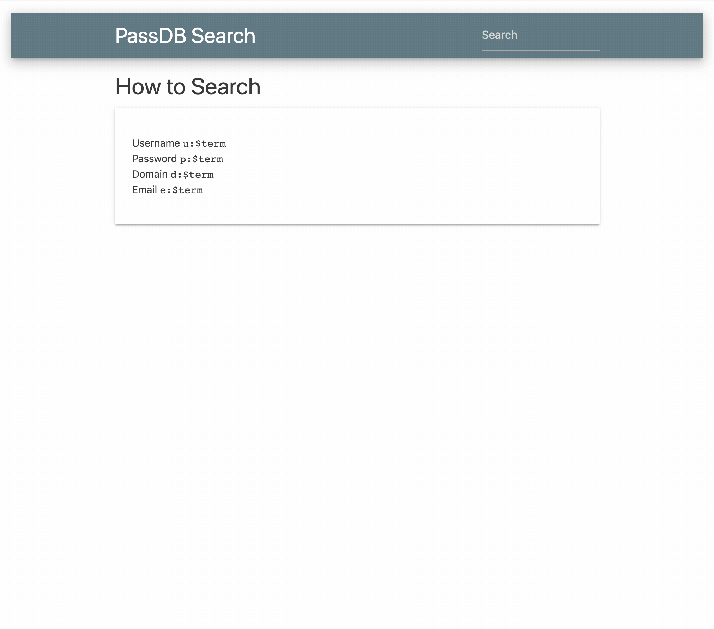
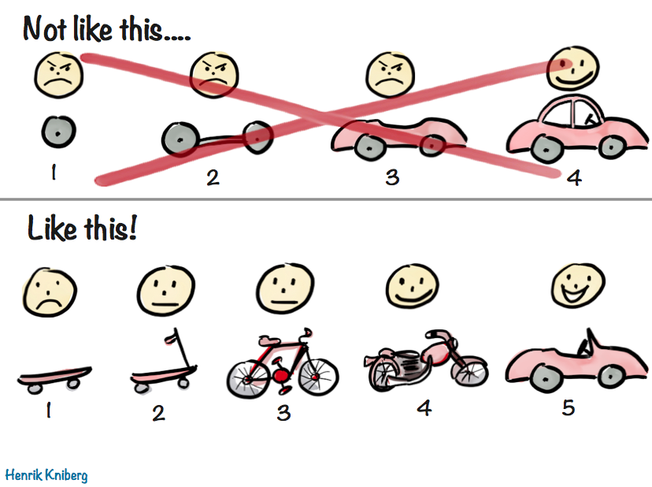

Password Dump Database - Part 1
Preface
This post is first in a series where I mostly catalogue my failures, what didn’t work, and the lessons I learned along the way. This isn’t a tool drop, or a new dump. Also, part 2 basically says every choice I make in Part 1 (this part) is wrong. If you’re a DB admin or have experience with manipulating large amounts of data, prepare to cringe… HARD
If you’re just interested in some stats and bencharks, you can skip straight to that section
If you’d like to play along, here are some magnet links to the dumps.
# Collection #1
magnet:?xt=urn:btih:b39c603c7e18db8262067c5926e7d5ea5d20e12e&dn=Collection+1
# Collections #2 - #5
magnet:?xt=urn:btih:d136b1adde531f38311fbf43fb96fc26df1a34cd&dn=Collection+%232-%235+%26+Antipublic
Why?

How much data duplication is there in the public database dumps, Collection #1-#5?
How much space is taken by duplicate passwords and email domains like gmail.com?
During a Hammock-Driven Development session,
thinking about how to answer this question, I found myself with the additional desire of searching
through the Collections without needing to zgrep my way through. I also didn’t accept grepping
through terrabytes of unzipped data as a solution. When I think data normalization, and quick
searching we all think: DATABASES!
Planning it
This dataset is huge. Querying will be 99% percent of this database’s purpose. We want fast search results. We can decide, then, to incur the costs of writing to a heavily-indexed database up front, while seeding the databse. Let’s get normalized.
The records in these types of dumps are generally structured like so:
username@domain.com:P@ssw0rd!
Let’s start by splitting each record into tables usernames, domains, and passwords.
We can also create a records table with foreign keys which will maintain the relationship between
entires in the other 3 tables. Also, if we create a unique index on the combination of the foreign
keys in the records table, we ensure that only one combination of user, domain, and
password ever enters the records table. If there are 900 million gmail.com addresses in the
dumps, the string “gmail.com” is only stored once. This kind of data normalization is what
databases are meant for.
With this configuration, if we seed our database with the following records:
jerry@gmail.com:Summer19
adam@gmail.com: Summer19
samantha@yahoo.com:Summer19
samantha@yandex.ru:Password123
our tables will look like this:
Usernames
| id | usernames |
|---|---|
| 1 | jerry |
| 2 | adam |
| 3 | samantha |
Passwords
| id | password |
|---|---|
| 1 | Summer19 |
| 2 | Password123 |
Domains
| id | domain |
|---|---|
| 1 | gmail.com |
| 2 | yahoo.com |
| 3 | yandex.ru |
Records
| username_id | domain_id | password_id |
|---|---|---|
| 1 | 1 | 1 |
| 2 | 1 | 1 |
| 3 | 2 | 1 |
| 3 | 3 | 2 |
With this normalization, we’ve taken 109 bytes of dump data and normalized it down to 64 bytes of uniqued data, plus the size of the join table that maintains the previous relationships.
Also, with records serving as a JOIN table between the other 3 tables, we can create some
interesting queries.
- Who are all the users that use
P@$$w0rd1for a password? - What’s the most common password by users from company
contoso.com? - At which other domains does a particular user receive email?
- Did they use the same password on other sites whose creds were also dumped?
Building it
I really enjoy using the ORM, ActiveRecord. ORMs are Object Relational Mappers. They’re a layer of
abstraction over databases that exists across most programming languages. They take that language’s
concept of a struct/class/object and map its properties to a database table. For example, if we
have a Dog class in our language, an ORM maps this class to a dogs table in our database. Once
we create an instance of that dog class, starbuck = Dog.new, starbuck now represents a single
row in the dogs table. Columns, then, are mapped to properties of an instance.
starbuck = Dog.create(name: 'Starbuck')
=> Dog<id: 1, name: 'Starbuck'>
starbuck.name
=> "Starbuck"
When calling starbuck.name, the ORM’s query planner will generate and issue the following query to
the underlying SQL engine:
SELECT name
FROM dogs
WHERE 'id' = 1
=> "Starbuck"
Another beneficial feature of an ORM is that it can be configured for many different SQL dialects. The ORM affords us another abstraction by allowing users to configure different database engines in the ORM’s initial configuration. We could, for example, conditionally use a SQLite3 file for running tests locally during development, but use Postgres in production. All without changing a line of business logic.
Another reason I chose ActiveRecord was its ease of configuration. The following blocks of code are all that’s needed to enable queries that can ordinarily be cumbersome to write.
Configuring data models
require 'active_record'
class Password < ActiveRecord::Base
has_many :records
has_many :usernames, through: :records
has_many :domains, through: :records
end
class Domain < ActiveRecord::Base
has_many :records
has_many :passwords, through: :records
has_many :usernames, through: :records
end
class Username < ActiveRecord::Base
has_many :records
has_many :passwords, through: :records
has_many :domains, through: :records
end
class Record < ActiveRecord::Base
belongs_to :domain
belongs_to :password
belongs_to :username
end
Configuring the Database Driver
require 'active_record'
ActiveRecord::Base.establish_connection(
host: "localhost",
database: "passdb",
username: "postgres",
password: "postgres",
adapter: "postgresql"
)
Configuring the Database Schema
The following are the schema migrations that will create the correct tables and indices in our database, as well as set the constraints necessary to keep our data clean:
require 'active_record'
class AddRecords < ActiveRecord::Migration[5.2]
def self.up
create_table :records, unlogged: true do |t|
t.references :password, null: false
t.references :domain, null: false
t.references :username, null: false
end
## This will create a uniquness check on the combination of a user, password, domain
add_index :records, [:password_id, :domain_id, :username_id], unique: true
### These are just query optimization indices
add_index :records, [:username_id, :domain_id]
add_index :records, [:username_id, :password_id]
end
end
class AddPasswords < ActiveRecord::Migration[5.2]
def self.up
create_table :passwords, unlogged: true do |t|
t.string :password, null: false
end
# only allow one instance of any given password
add_index :passwords, :password, unique: true
end
end
class AddUsernames < ActiveRecord::Migration[5.2]
def self.up
create_table :usernames, unlogged: true do |t|
t.string :name, null: false
end
# only allow one instance of any given username
add_index :usernames, :name, unique: true
end
class AddDomains < ActiveRecord::Migration[5.2]
def self.up
create_table :domains, unlogged: true do |t|
t.string :domain, null: false
end
# only allow one instance of any given domain
add_index :domains, :domain, unique: true
end
end
Seeding the Database
Collections #1-5 are huge. And they also include tons of duplicate records. By setting the correct indices and database constraints, we can offload the task of knowing what is “good” vs “bad” data to the database itself, instead of worrying about that in code. I initially handled this logic in the code that seeds the database.
Dev Tangent: Software validation was a bad idea for a couple of reasons. There are no assurances that the data in our database is clean. Especially when there are multiple threads, all trying to write at the same time. Initially I just had a single-threaded seeding program. ETA was about a year. During a multithread refactor, I ran into some concurrency problems. It was then that I moved validation to the database. ETA dove down to 90 days.
With the ORM configured, we can begin the seeding process.
In order to create a record, we need 3 other pre-existing row ids: user_id, password_id, and
domain_id. Sometimes, we encounter a line in the dump data that has all new data. Other times,
maybe only the username and password is new. Upon trying to create a new gmail.com domain record,
we’ll get a failure because it doesn’t meet our uniquness constraint. In this scenario, we can
instead ask for the id of the existing gmail.com entry in our domains table. With
our 3 ids, we can now use them as foreign keys for a new record entry.
You may already see a drawback in our implementation here. In a worst case scenario, where we’re
trying to insert a fully duplicate record, that means we can have 7 queries to attempt to write 1
record. That might be acceptable when seeding some datasets, but with a record count in the
billions, that means a 45-day difference of seed time. Also keep in mind that each write to the
database is actually 2 writes, because the indices of each record also need to be updated. However,
we decided early on to take this hit, since this isn’t going to be write-heavy database. We could
still help the seed times by leveraging Database Transactions and Postgres' ON CONFLICT keyword
though.
Grouping 7 different transactions into one will ensure that all operations required for adding a new dump entry to our tables occur together.
BEGIN
WITH ins1 AS (
INSERT INTO usernames(name) VALUES ($1)
ON CONFLICT (name) DO UPDATE SET name=EXCLUDED.name
RETURNING id AS user_id
)
, ins2 AS (
INSERT INTO passwords(password) VALUES ($2)
ON CONFLICT (password) DO UPDATE SET password=EXCLUDED.password
RETURNING id AS pass_id
)
, ins3 AS (
INSERT INTO domains(domain) VALUES ($3)
ON CONFLICT (domain) DO UPDATE SET domain=EXCLUDED.domain
RETURNING id AS domain_id
)
INSERT INTO records (username_id, password_id, domain_id)
VALUES (
(select user_id from ins1),
(select pass_id from ins2),
(select domain_id from ins3)
)
COMMIT
Now, I wrote this, and it’s still intimidating. From the top, we try to create each item but give
the query a sort of catch statement that says “if you’re unable to save, then get the id of the
entry that matches the data I just tried to insert. Then, save that id as a variable for later
use”. In the INSERT statement, we create a new record with the IDs we stored in the 3 variables
from the 3 previous blocks. Because this is all wrapped in a Transaction, it gets sent to the
database as 1 transaction, not 7.
Another benefit of a transaction, is that in case of any sort of unrecoverable failure, the entire
thing get’s undone. If our seeder panics while trying to write a domain, the previous password,
and username entries are removed from the database (they actually never wrote), ensuring we don’t
have any dangling data in our database.
Querying
Once we create the tables and seed some data, our associations are set in the ORM such that
pivoting on any instance of a username, password, or domain is possible.
# start with a domain
yahoo = Domain.find_by(domain: "yahoo.com")
# find all passwords by yahoo mail users
yahoo.passwords
# find all yahoo mail users
yahoo.usernames
# find all password of a particular yahoo mail user
yahoo.usernames.first.passwords
# start with a user
jojo = Usernames.find_by(name: "jojo1990")
# see all passwords belonging to jojo
jojo.passwords
# see all email account for jojo
jojo.domains
# starting with a password
pass = Password.find_by(password: "P@ssw0rd!")
# see the users that share this password
pass.usernames
Iterate

The first iteration of the project was to create a CLI where I could load my models, and query the
data in an interactive enironment, like so… records.first.username.passwords, etc.
The second iteration was creating a JSON API, so that remote services would be able to query this data.
The following was all that was needed to create the JSON API server in Ruby. (ruby because that’s what ActiveRecord is written in)
get '/domains/:domain' do
domain = Domain.find_by(domain: params[:domain])
paginated(domain, params)
end
get '/usernames/:name' do
user = Username.find_by(name: params[:name])
paginated(user, params)
end
get '/passwords/:password' do
password = Password.find_by(password: params[:password])
paginated(password, params)
end
get '/emails/:email' do
user, domain = params[:email].split('@')
emails = Record.joins(:username)
.where("usernames.name = ?", user)
.where("domains.domain = ?", domain)
prepare(emails)
end
Finally, with the API complete, I jumped into writing a web interface that could really leverage the pivoting capabilities we enabled by configuring our schema and ORM the way we did. I’d been looking for a reason to try out Reactive Programming for a while, so I opted for Svelte as my front-end framework of choice.
Dev Tangent React.js is not Reactive. For a glimpse into the powers of Reactive Programming, I recommend this talk. https://www.youtube.com/watch?v=Bfi96LUebXo
Svelte acts like a JavaScript “compiler” instead of a traditional JavaScript framework. Because the code you write runs through this compilation process, only the components of Svelte that you need are added to your final packed JavaScript, keeping bloat down, and eliminating the need for pre-processors like Webpack and their complicated configuration files. Additionally, any data you declare as “reactive” is monitored for change and updated anywhere it’s referenced. Think: spreadsheet cells that are members of a formula’s data set.
Benchmarks and Data
During this entire process, there were many lessons learned, project restarts, and hair pulled. Bottom line, respect your Database Admins. Take them to lunch. Their job requires some very specific and complicated knowledge.
Also, databases are a feat of real Software Engineering.
This project started completely in Ruby, and then I eventually moved the seeder to Golang. The following table shows the chunks of time I shaved off, along with what I did to save that time.
This is highly unscientific and remember that each row indicating improvement is a result of every change that is listed above it.
| Seeding ETA | Change That Shaved Time |
|---|---|
| 2 years | |
| 1 year | Buying an SSD |
| 10 months | Multithreaded Seeding |
| 6 months | Data validation moved to the database |
| 4 months | Database tuning |
| 3 months | Seeder re-written in Go |
| 2 months | Transactions |
Only after all these changes, was I finally saturating the IO of my SSD.
I should note that the rate of new records added begins to slow drastically as we encounter more and more duplicate entires in the database. I wish I’d kept a count of NON_UNIQUE_RECORD errors to report. I’m a bad scientist and I feel bad.
All stats are for files with the txt extension only.
Original line count
27,472,858,235
Listing of the data after being split and uniqued:
-rw-r--r-- 1 alex alex 296G Nov 27 19:20 usernames.txt
-rw-rw-r-- 1 alex alex 18G Dec 3 11:04 usernames_uniq.txt
-rw-r--r-- 1 alex alex 260G Nov 27 19:20 domains.txt
-rw-rw-r-- 1 alex alex 2.3G Dec 2 08:00 domains_uniq.txt
-rw-r--r-- 1 alex alex 250G Nov 27 19:20 passwords.txt
-rw-rw-r-- 1 alex alex 16G Dec 1 02:13 passwords_uniq.txt
Line counts of split components pre and post uniquing:
27472857767 domains.txt
27472858235 passwords.txt
27472857744 usernames.txt
67031505 domains_uniq.txt
958883636 passwords_uniq.txt
1296186909 usernames_uniq.txt